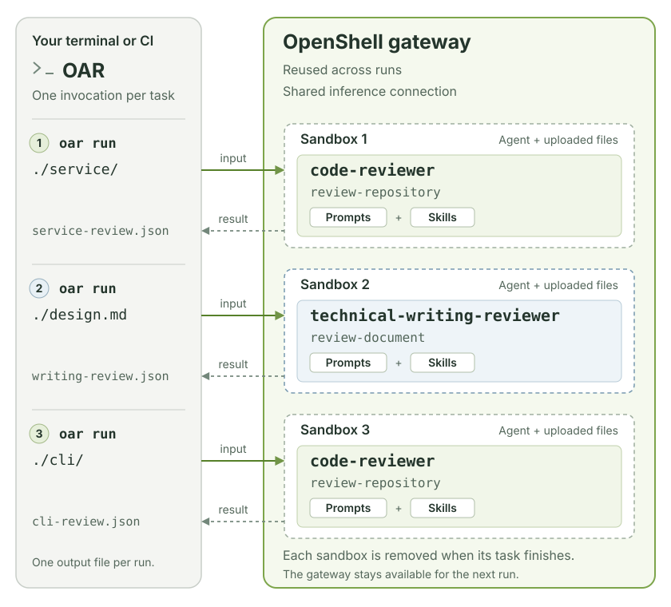

OpenShell Agent Runner
OpenShell Agent Runner (OAR) runs an agent task in an isolated OpenShell sandbox and saves the result to a file. Use it to review a project, improve a technical document, or run your own tasks from a terminal or CI job.
{kind=link}

A profile is a folder containing instructions, model settings, and sandbox permissions. A task is one job defined in that profile. You choose a profile, select a task, and provide the input and output paths.
Before you start
Install uv and set up OpenShell 0.0.111 or newer. You need a running gateway and configured inference: the connection that lets the agent use your model. Follow the OpenShell quickstart if you have not set these up yet.
OAR uses your existing OpenShell configuration. API keys and provider setup belong there.
1. Install and check the connection
These profiles are not included in PyPI 0.0.2. Use an OpenShell-Research checkout containing these profiles and run the following from its root:
doctor displays the OpenShell version, gateway status, and inference
configuration. Check that a model is configured and note its model ID for the
next step.
The commands on this page use your selected gateway and its default workspace.
To choose another target, add --gateway NAME --workspace NAME to doctor and
run. See connection options.
2. Create your profiles
Replace YOUR_MODEL_ID with your configured inference model ID:
You now have two editable profiles:
profiles/
├── code-reviewer/ Review a local project directory
└── technical-writing-reviewer/ Review a technical document
The default thinking level is high. For a model without reasoning support,
add --thinking off to init.
3. Run your first review
Choose an existing text file, such as a README, design note, or draft blog post.
Replace ./README.md with its path:
oar run ./profiles/technical-writing-reviewer \
--task review-document \
--input ./README.md \
--output ./review.json
OAR uploads the file, runs the reviewer, saves the result, and removes the sandbox. Your original file is unchanged.
To check the configuration and preview the commands first, add --dry-run.
This does not contact the gateway or launch an agent.
4. Read the result
Open review.json. It contains a verdict, a summary, scores from 0 to 100,
findings, strengths, and limitations. A higher score is better.
| Verdict | Meaning |
|---|---|
pass |
No material changes are needed. |
needs_changes |
The reviewer found an issue worth fixing. |
inconclusive |
The reviewer needs more context to make a sound judgment. |
A successful command means OAR delivered a valid result. The review itself can
still say needs_changes. See scores and findings
for the full meaning.
Next steps
- Run reviews: review code, set a focus, and supply context.
- Customize profiles: edit instructions or define your own tasks.
- Command reference: find options, CI behavior, and fixes for common problems.